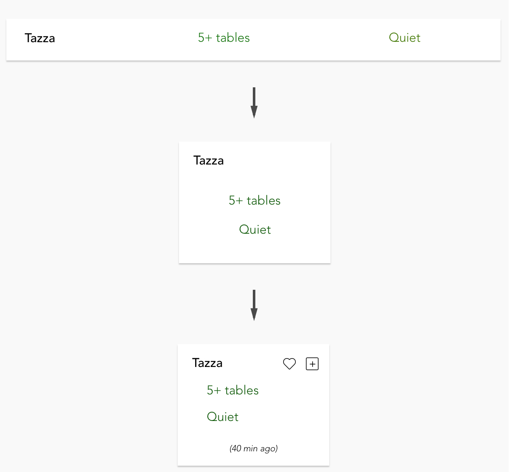

March 2017 ( 4 weeks )
Team: Arlex G., Angela H., Akash K., Amy L., David S, Neel T.
Finding a place to study on campus can be frustrating at times. Study Space was an attempt at solving this problem by utilizing the power of crowdsourcing. It was created as a final project for the course Social Web at CMU.
As the only designer on the team, I created all the high-fidelity mockups for web and mobile platforms. By collaborating with the researchers and engineers on my team, I was able to help bring Study Space to life.
In order to better understand the problem, we surveyed the students at CMU and conducted interviews with students studying on campus.
The interviews and survey results confirmed that there was a real problem. Many students reported having trouble with finding a study room and some even reported spending more than 15 minutes looking for a space. Students found it very frustrating at times because they would walk from building to building until they finally found some seats.
We also discovered that space availability, noise level, and outlets seemed to be the most important features to students when looking for a space.

For our minimum viable product (MVP), I created a simple card for each study space that displayed only the most important information.
During usability tests, some users had trouble scanning for information because of how long the cards were and the way they were grouped. I changed the design of the cards to make it easier for users to quickly scan and retrieve the information they need.
After some more user interviews, I added an option to favorite spaces because most students reported that they have a few places that they prefer to study at. Secondly, I added an option to vote directly from each card to make the voting process easier.
Although creating a crowdsourcing web application was the quickest and most cost efficient to solve the problem at the time, it was far from being the perfect solution.
One of the major obstacles our team faced was motivating lurkers to contribute to the platform. If there was more time, I would love to conduct more user interviews to better understand user motivation and test different ideas to increase user motivation to vote. Some ideas I had include establishing a reward system, fostering a sense of community, or even making voting a requirement to use the application.